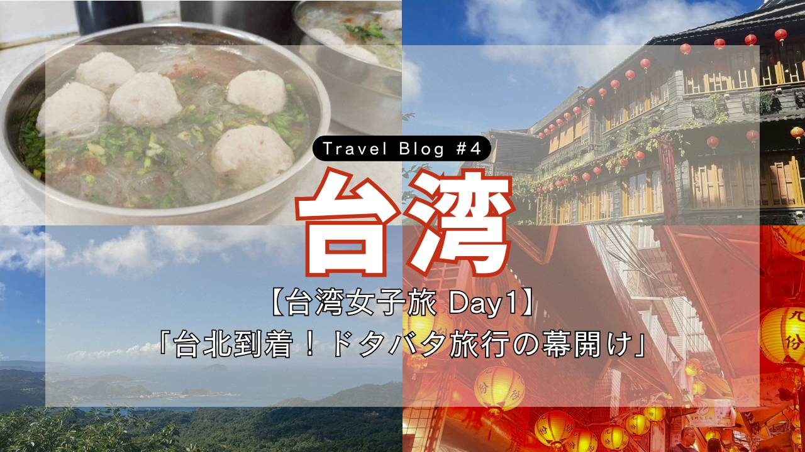
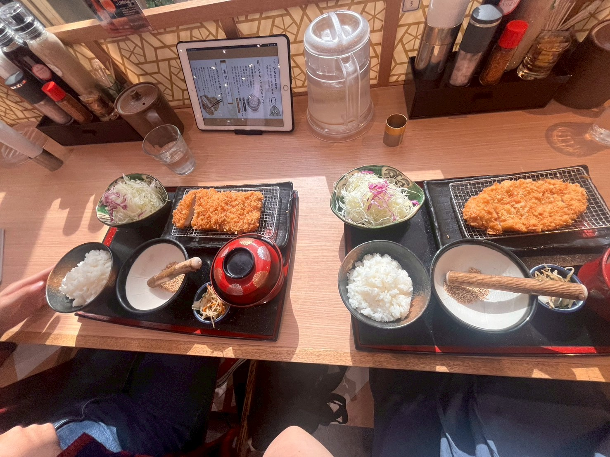
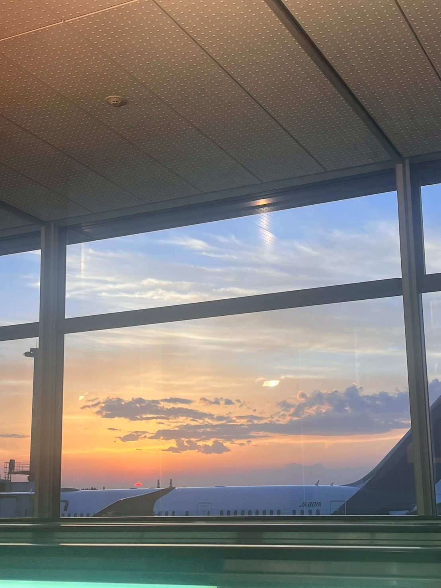
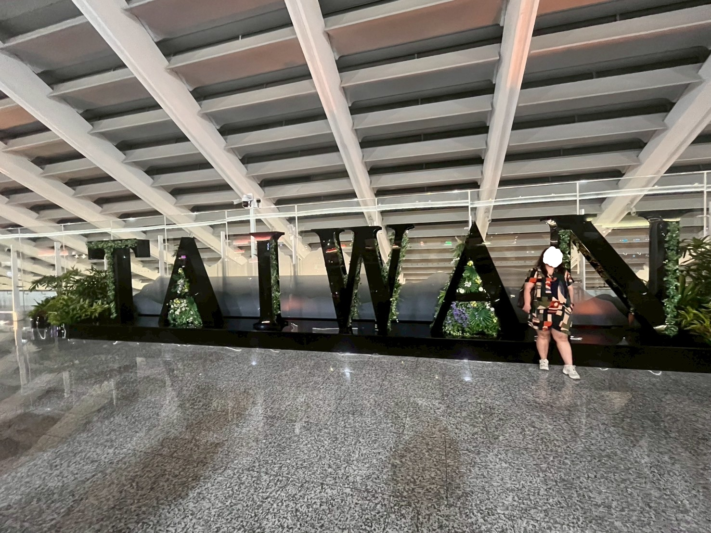
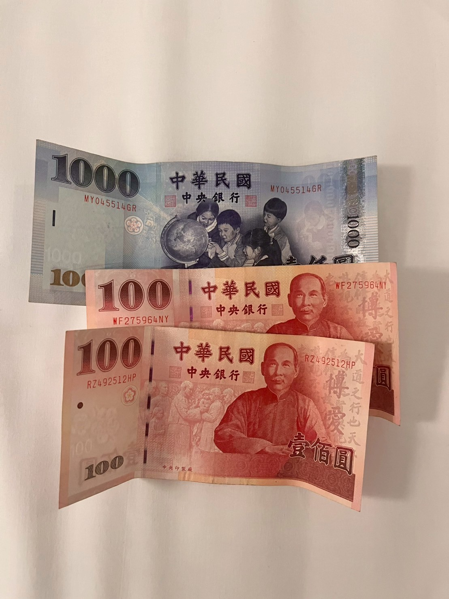
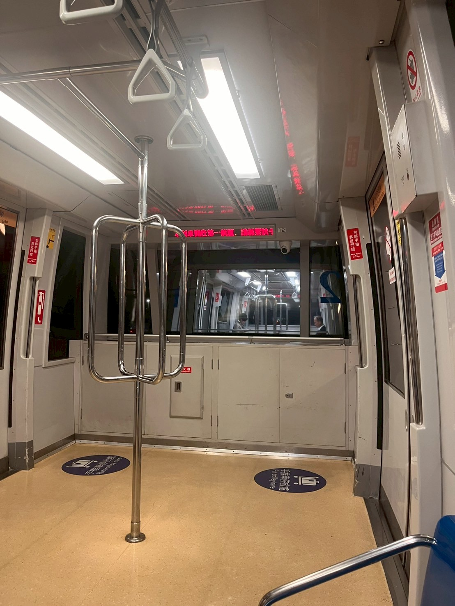
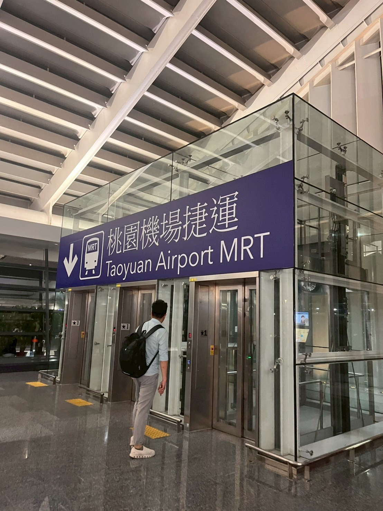
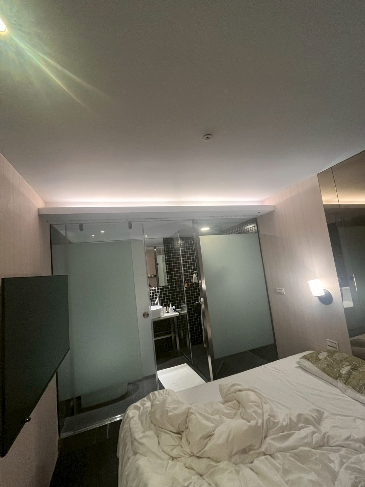
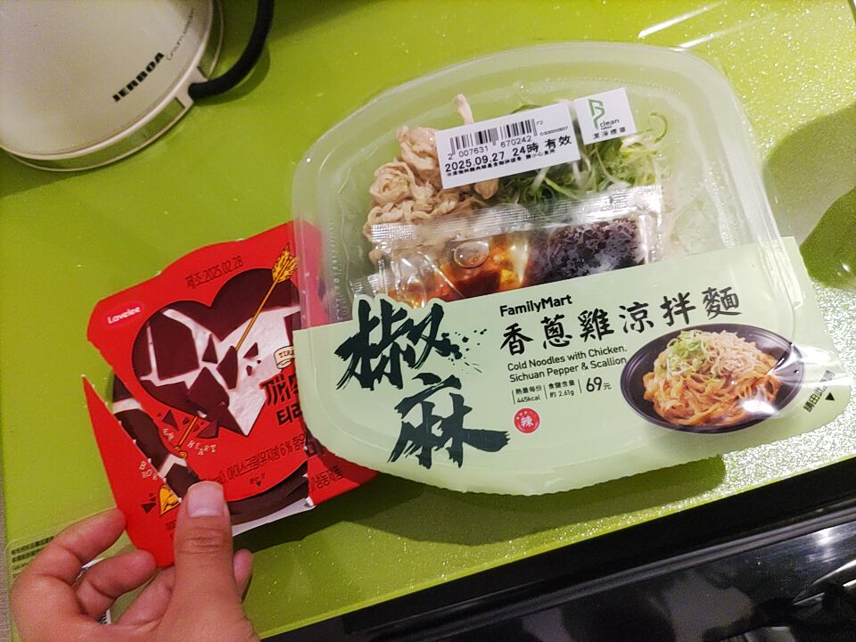

【台湾女子旅 Day1】
「台北到着！ドタバタ旅行の幕開け」

Trip Info
Place 台湾
Date 2025.09.28〜30
Transport 飛行機・電車・バス
皆様こんにちは。ミナです。
今回は大学の友達との台湾旅行一日目のノートです。
友達は初海外！私は保護者同伴なしの海外旅行が初めて！
非常にドキドキでバタバタな旅の様子をご覧ください。
※このノートでは、［1元＝4.9円］で計算しています。

成田空港で友達と合流後、空港内でお昼ご飯を食べました。
海外に行く前だし、ということでとんかつです。
フライトの時間まで、旅行雑誌を二人で読んでいました。
おともにはスタバ。
友達のお母さんが奢ってくれました✨

さて、では行ってきます！

到着です！
実は台湾は入国カードが、ほぼ完全にオンライン申請となっているのですが、そのことを完全に忘れており入国にてこずってしまいました💦
長野旅行でお世話になった山田さんにも、忠告されていたことなのに…。
結局電子申請が上手くいかず、結局職員さんに頼んで紙での対応にしてもらえました。
空港内で現金の調達と、悠遊カードを買いました。(現金の換金は1万2000円→2305元でした。)

「悠遊カード」というのは日本でいうPASMOやSuicaに近く、公共交通機関や様々なお店での支払いで使うことのできる便利なカードです。
柄も豊富で可愛く、台湾に行くなら買うべきアイテムです！
ちなみに私はスヌーピーデザインのものを選びました！〈悠遊カード・・・490円〉

MRTで台北駅まで向かいたかったのですが、台湾の文字が読めそうで読めず、間違えて空港内のターミナル間を移動する電車に乗ってしまいました笑。
到着時刻も遅く、入国にも時間がかかったため、終電の時間がやばい！！と二人で大焦りでした。

MRTは台湾で「捷運」←こう書くそう。勉強になりました。

今回宿泊したのは、「Finders Hotel Fu Qian」さんです。
台北駅から徒歩で行ける距離にあり、ボタニカルな世界観が特徴でした。(写真撮る前にくつろいでしまったので、布団がぐちゃぐちゃです💦)
フロントにあるお菓子やカップ麺が食べ放題なのもありがたい！！
一旦チェックインした後、夜遅いですがコンビニで夜食を買います。
台湾にはいたるところにコンビニがあり、とくにファミリーマートが多い印象がありました。


私はファミリーマートで「椒麻香蔥鶏涼拌麵」〈338円〉、アイス〈金額不明〉、水〈142円〉を購入。
買った夜ご飯を食べ、明日の作戦会議の後就寝しました。
ちゃんとシャワーも浴びています！
今回の旅記録は以上です。
ここまでご覧いただきありがとうございます。
次回のブログも是非見てください♪
ではまた！